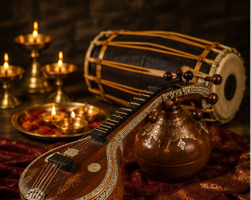
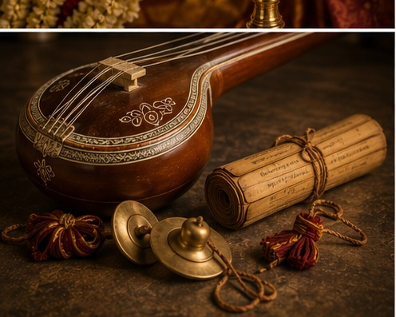
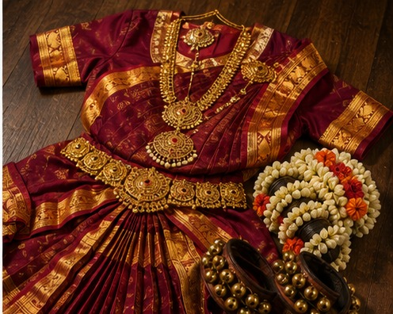

Carnatic Music
The Iyengar community has a long, well-documented association with Carnatic music, South India's classical musical tradition built on raga (melodic framework) and tala (rhythmic cycle). Much of the Carnatic repertoire is explicitly devotional — many of its most celebrated compositions are hymns of praise, often addressed to Vishnu in forms directly connected to Sri Vaishnava theology. Instruction traditionally begins young and continues for years under a guru, treating musical mastery as inseparable from spiritual discipline.
Instruments central to the tradition include the veena (a plucked string instrument with deep ties to South Indian devotional music), the mridangam (a two-headed drum providing rhythmic foundation), and the human voice itself, trained for years before a singer is considered ready to perform.


Bharatanatyam
Bharatanatyam is one of India's oldest classical dance forms, historically performed in temple settings as an act of worship before it evolved into the concert art form widely practiced today. Its vocabulary combines precise rhythmic footwork, intricate hand gestures (mudras), and expressive storytelling (abhinaya) — often narrating episodes from Vishnu's life and the broader devotional canon.
Many Iyengar families continue to treat Bharatanatyam training as a meaningful part of a child's upbringing, alongside more academic pursuits — a pattern that reflects the community's broader emphasis on scholarly and artistic excellence side by side.

The Common Thread: Bhakti
What unites Carnatic music and Bharatanatyam within Iyengar culture is the same principle that runs through the cuisine and the daily rites: bhakti, devotion, expressed through disciplined, embodied practice. A raga sung correctly, a mudra held precisely, a dish named with the "Amudu" suffix — all are treated as different dialects of the same underlying language of surrender and reverence.